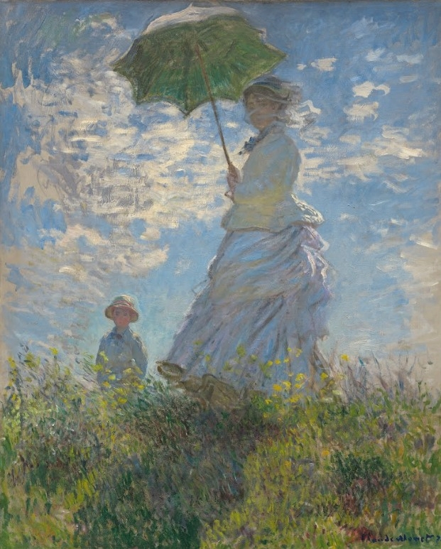
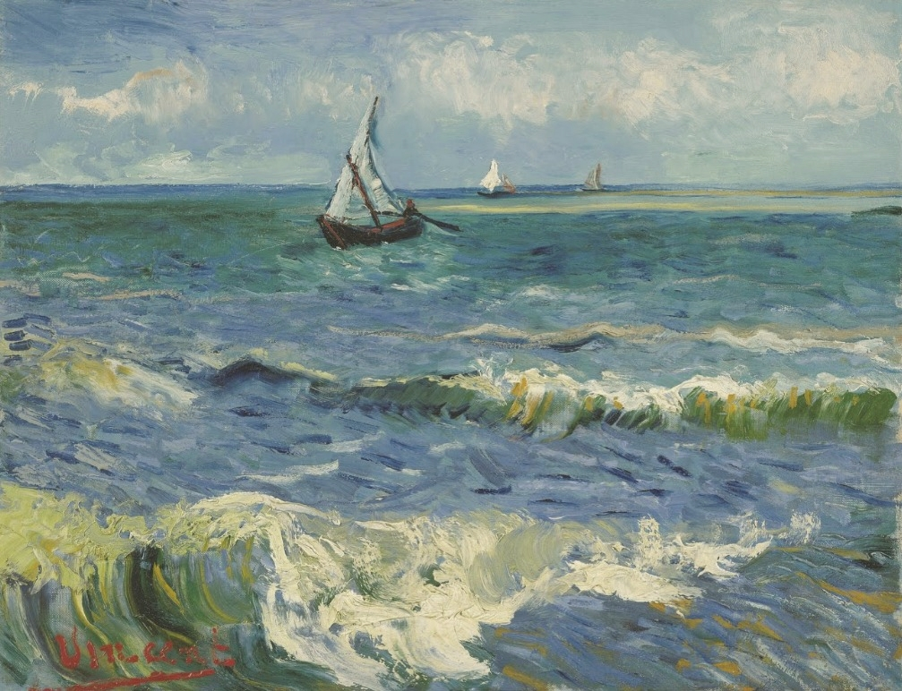
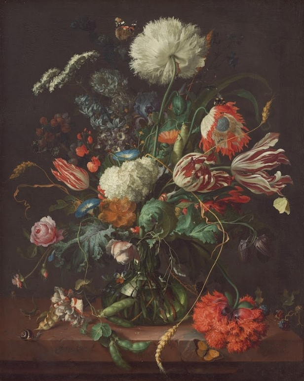
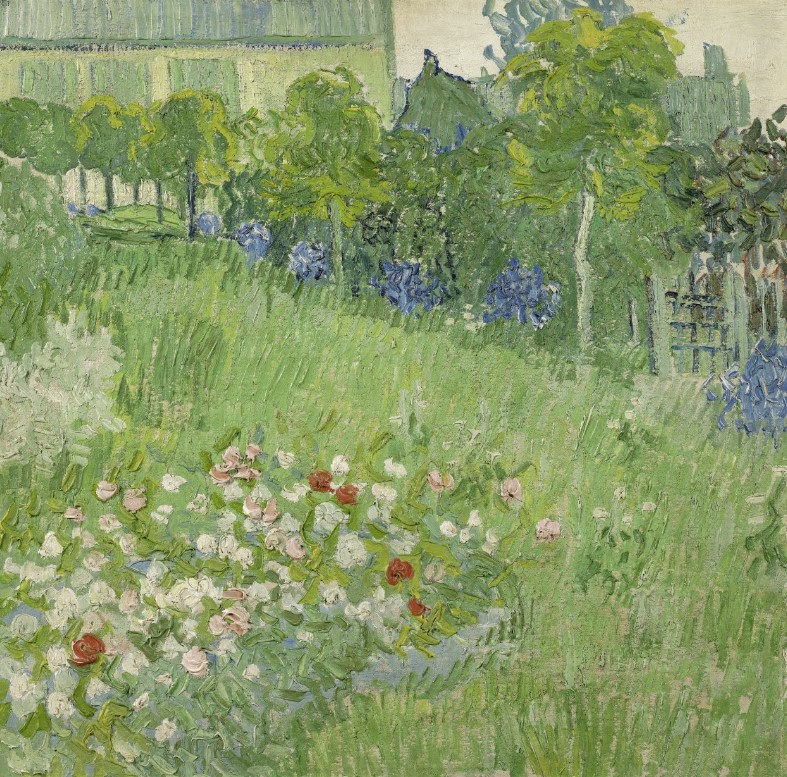

MY BLOG POSTS

Blog Post 1
Setting up github and my reflections on the week's readings on the world wide web

Setting up github and my reflections on the week's readings on the world wide web
Blog Post 4
Flow Diagram, Goal Alignment, and reflection on the week

Flow Diagram, Goal Alignment, and reflection on the week
Blog Post 7
My struggles during my second assignment, and my goals for my third assignment

My struggles during my second assignment, and my goals for my third assignment
Blog Post 10
My reflection on Luts' Digital inequalities in the age of artificial intelligence and big data, as well as my thoughts on assignment 3
My reflection on Luts' Digital inequalities in the age of artificial intelligence and big data, as well as my thoughts on assignment 3